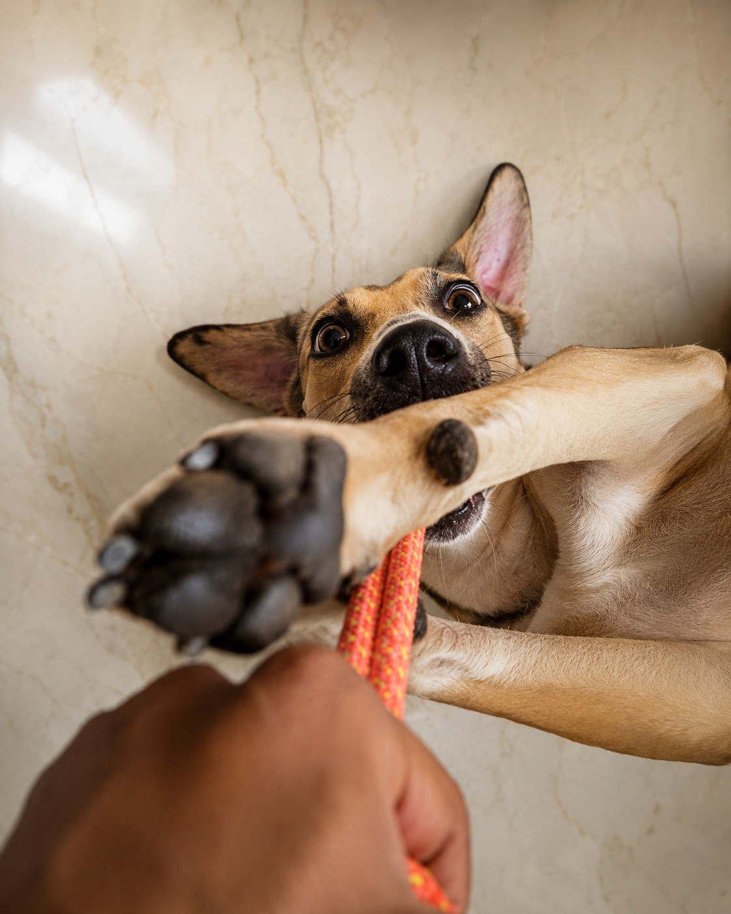

Treat routines
The 7-Day Transition Plan
A gradual step-by-step introduction to make a new treat routine comfortable and positive.
Read guideThe Game of Bones journal
The live learning library covers nutrition, transition plans, dental treats, ingredient explainers and feeding guidance for dog parents.

Treat routines
A gradual step-by-step introduction to make a new treat routine comfortable and positive.
Read guide
Ingredient notes
A look at fillers, artificial colours and preservatives—and why ingredient labels matter.
Read guide
The goodest stories
A practical food-safety guide to foods dogs may enjoy and foods to keep away from them.
Read guide
New dog parent guide
A practical starting point for choosing, portioning and supervising treats in a dog’s everyday routine.
Read guideFrom the live journal
This is an informational food-safety article, not a diet plan. Foods and portions depend on the individual dog, so consult a veterinarian or qualified veterinary nutritionist before making material diet changes.
Start with a small amount, observe your dog, and make gradual changes. The guide focuses on a calm, supervised introduction rather than promising a particular health outcome.
A useful baseline: treats supplement a complete diet; fresh water and supervision matter; and the appropriate size, texture and quantity depend on the dog in front of you.
Fish treats offer a different texture and flavour from poultry or chews, which can make a rotation more interesting. Choose the size for your dog, introduce one new ingredient at a time, and supervise every chew. The pack label should always name the ingredient clearly.
Helpful routine: keep portions small, offer alongside your dog’s usual complete food, and store the pack sealed and dry between treats.
Humidity changes texture and freshness quickly. Close the pouch tightly after every use, keep it away from direct sunlight and wet counters, and use a clean, dry hand or scoop. Follow the best-before date and pack instructions rather than relying only on appearance.
If a product smells unusual, develops visible mould, or the pouch is damaged, stop using it and contact support with the batch details.
A chew should suit the individual dog’s size, chewing style and experience. Start when you can supervise, take it away if it becomes small enough to swallow, and provide fresh water. For puppies, seniors, dogs with dental concerns or dogs that gulp food, ask your veterinarian which texture is appropriate.
Start at the ingredient list, not the marketing copy. A simple label names the animal ingredient and keeps the language specific. Then check the pack for feeding guidance, storage, net weight, batch information and the intended dog size. Transparency makes it easier to choose thoughtfully.